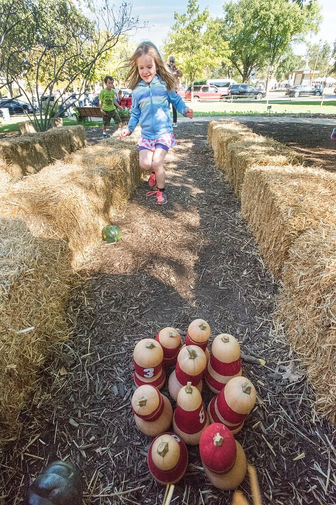
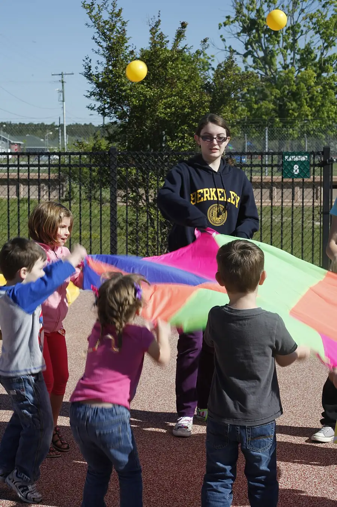
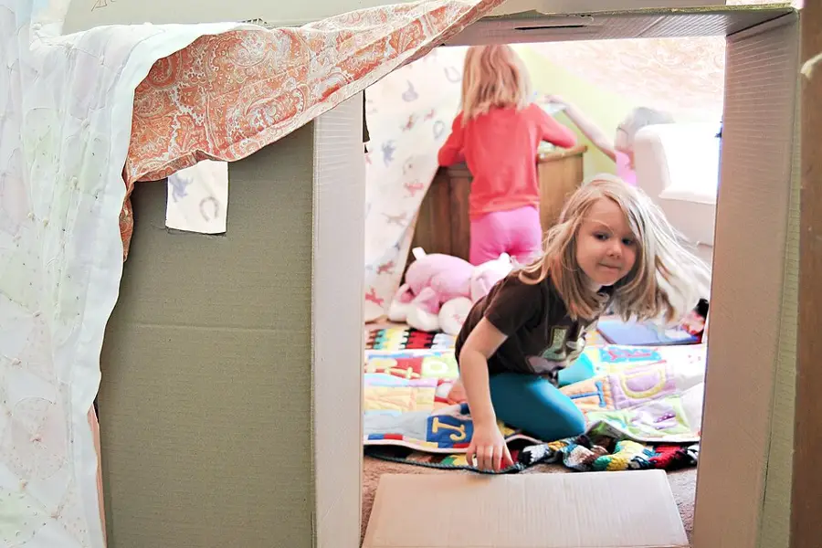

Today at the vault.
Set your cityMy class
Tell the vault about your class once. It is saved on this device only, and the Sub Tub, the week planner and the Party Planner start from it.
A field guide to things kids can do.
778 activities for ages 3 to 14. Every one has its steps and materials. 360 have a photo and 778 name where the idea came from. We are adding the rest.
Plate 1 · In season: Fall
Pumpkin Bowling
Mini pumpkins vs. bottle pins: the indoor bowling alley builds itself.

- The bowler: two rolls a turn
- The lane: hay bales or floor tape
- The ball: a small pumpkin
- The pins: ten weighted bottles
.jpg){kind=link}
- Ages
- 4 to 12
- Group
- 2 to 30
- Time
- 15 to 25 min
- Where
- Indoors
- Turns
- Nobody sits out
The five doors
Five ways in. Pick the one that matches the day you have.

Plan my weekA week of activities, day by day.Dealt from all 778 activitiesPhoto from Parachute Popcorn. Photo: Unknown, Public domain, via Wikimedia Commons Photo source CollectionsTeacher-ready bundles for the moments that matter.34 bundles, every pick with a curator's notePhoto from Seed Library Opening Day. Photo: Aspensmonster, CC BY-SA 4.0, via Wikimedia Commons Photo source
CollectionsTeacher-ready bundles for the moments that matter.34 bundles, every pick with a curator's notePhoto from Seed Library Opening Day. Photo: Aspensmonster, CC BY-SA 4.0, via Wikimedia Commons Photo source
Kit BagPack one day's bag.One whole rainy day, indoors, with its kit listPhoto from Blanket Fort Book Nook. Photo: Personal Creations, CC BY 2.0, via Wikimedia Commons Photo source- Party PlannerThemes and the full party pack.A timed station plan for your class partyPhoto from Dragon Parade. Photo: Zalasem1, CC BY 4.0, via Wikimedia Commons Photo source
 The DeskBrowse the vault by category drawers.778 activities in 11 drawersPhoto from One-Sheet Zine Workshop. Photo: Fhwatson, CC BY 4.0, via Wikimedia Commons Photo source
The DeskBrowse the vault by category drawers.778 activities in 11 drawersPhoto from One-Sheet Zine Workshop. Photo: Fhwatson, CC BY 4.0, via Wikimedia Commons Photo source


.jpg){kind=link}


What's coming up
- HalloweenSat Oct 3177 activities6 days
- Day of the DeadMon Nov 26 activities8 days
- DiwaliSun Nov 87 activities14 days
- ThanksgivingThu Nov 2625 activities32 days
- HanukkahFri Dec 48 activities40 days
- ChristmasFri Dec 2527 activities61 days
- New YearFri Jan 111 activities68 days
- Martin Luther King Jr. DayMon Jan 186 activities85 days
- Lunar New YearSat Feb 67 activities104 days
Contents
- 01Make168 activities
- 02Play143 activities
- 03Celebrate130 activities
- 04Learn162 activities
- 05Calm141 activities
The year's issues
- 01Spring45 activities filed
- 02Summer43 activities filed
- 03Fall55 activities filed the current issue
- 04Winter120 activities filed
By where
Counted from the library itself. 153 activities work in both places, so they sit on both shelves. The overlap is on purpose. Good to know: 500 never need to go outside, so a rained-out day is still a full day.
By time
Counted from the library itself, by each activity's shortest run. Every 15-minute activity also sits on the 30-minute shelf, and 332 more fit between 16 and 30 minutes. Good to know: 712 of 778 activities fit in half an hour, so a short gap in the day is still a full choice.
By group
Counted from the library itself, by the group sizes each activity can take. 479 activities fit both a small group and a large one, so they sit on both shelves. Good to know: 91 activities can stretch to 40 kids, so the whole program in one room still has a choice.
By age
Counted from the library itself, by the ages each activity is written for. 196 activities fit both a 5-year-old and an 11-year-old, so they sit on both shelves. Good to know: a mixed-age group still has those 196 to choose from, little kids and big kids in the same room.
Ready to run
Counted from the library itself, by what each activity asks of you before it starts. Good to know: 62 activities need no prep, print nothing, and sit no one out, so they are ready the minute you are.
By kit
- 01Nothing to gather91 activities
- 02Two things or fewer294 activities
- 03Three things or fewer483 activities
Counted from the library itself, by how much each activity asks you to gather first. Every nothing-to-gather activity also sits on the other two shelves. Good to know: 91 activities need nothing gathered at all, and 724 need five things or fewer, so an empty cupboard is rarely the end of the day.
By length
- 01Runs 30 minutes or more417 activities
- 02Runs 45 minutes or more179 activities
- 03Runs an hour or more69 activities
Counted from the library itself, by each activity's longest run. Every hour-long activity also sits on the other two shelves. Good to know: 69 activities can fill a whole hour, and 417 can fill half an hour or more, so a long open stretch in the day is covered too.
By stretch
- 01Stretches 10 minutes or more560 activities
- 02Stretches 15 minutes or more342 activities
- 03Stretches 20 minutes or more158 activities
Counted from the library itself, by the window between each activity's shortest and longest run. Every 20-minute stretcher also sits on the other two shelves. Good to know: 342 activities can stretch by 15 minutes or more, and 26 can stretch by a whole half hour, so a plan that slips still holds.
By flex
- 01Flexes 20 kids or more530 activities
- 02Flexes 25 kids or more349 activities
- 03Flexes 30 kids or more97 activities
Counted from the library itself, by the window between each activity's smallest and largest group. Every 30-kid flexer also sits on the other two shelves. Good to know: 349 activities can flex by 25 kids or more, and 74 can flex by 35 kids or more, so a group that shrinks or doubles still fits.
By span
- 01Spans 5 years or more521 activities
- 02Spans 6 years or more392 activities
- 03Spans 7 years or more222 activities
Counted from the library itself, by the window between each activity's youngest and oldest age. Every 7-year spanner also sits on the other two shelves. Good to know: 392 activities can span 6 years or more, and 96 can span 8 years or more, so one room of little kids and big kids still fits.
By start
- 01Starts at 4 or younger272 activities
- 02Starts at 5 or younger442 activities
- 03Starts at 6 or younger580 activities
Counted from the library itself, by the youngest age each activity starts at. Every activity that starts at 4 or younger also sits on the other two shelves. Good to know: 442 activities start at 5 or younger, and 162 start at 3 or younger, so even the youngest group in the building has a real choice.
By end
Counted from the library itself, by the oldest age each activity ends at. Every activity that ends at 14 also sits on the other two shelves. Good to know: 511 activities end at 12 or older, and 133 end at 14, so even the oldest group in the building has a real choice.
By floor
- 01Starts with 2 or fewer381 activities
- 02Starts with 4 or fewer633 activities
- 03Starts with 6 or fewer733 activities
Counted from the library itself, by the smallest group each activity starts with. Every activity that starts with 2 or fewer also sits on the other two shelves. Good to know: 633 activities start with 4 or fewer, and 52 start with just 1 kid, so a nearly empty room still has a real choice.
By ceiling
Counted from the library itself, by the largest group each activity can hold. Every activity that fits 30 or more also sits on the other two shelves. Good to know: 620 activities fit 20 or more, and 16 fit 60, so even the biggest group in the building has a real choice.
About this database
Database coverage: ages 3 to 4 hold 160 records each; ages 5 to 12 hold 329 to 530 each; ages 13 to 14 hold 120 each and growing; 11 categories; 32 curated collections. Thinnest shelf, named honestly: ages 13 to 14, still 40 short of the young-end benchmark, closing eight records a wave. New finds arrive through The Scout's review queue, where a human decides before anything enters the database.